| Each year there is a delay in the opening of
the Going to the Sun road into Glacier National Park. They make the
most of this by allowing hikers and bikers to use part of the road that is
cleared, but still closed to vehicle traffic. This is my favorite
time of year, and one of the best things I do each year in Montana.
It is too beautiful and peaceful to describe. It was a truly magical
day for me. The only sad part is that they don't allow dogs, so
Buddy had to play at day care while I enjoyed the park. |
|
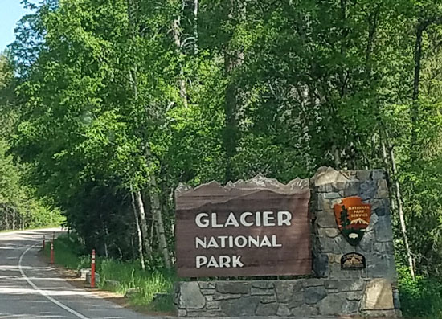 Entering beauty |
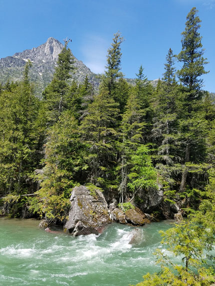 |
| The river was rushing really strong, making a lovely sound to accompany my ride. | |
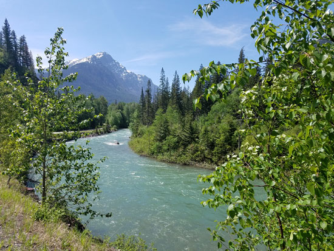 It had been cloudy and hazy until I got on the bike, then I was blessed
with beautiful blue skies. |
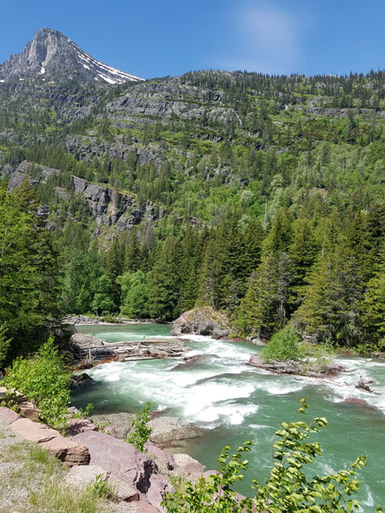 |
|
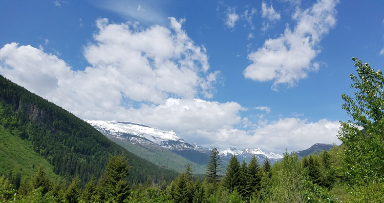 This was the point where I ran out of time and had to turn around, next time I'll have to get an earlier start.
|
|
|
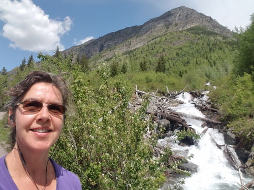 |
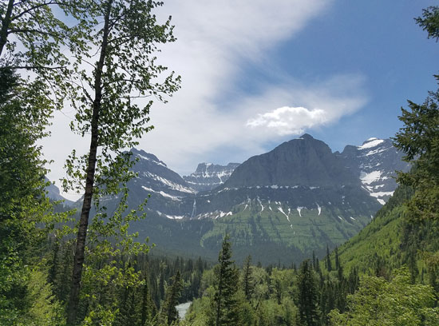 |
| Selfie with a small waterfall | Beautiful waterfall coming out of a hanging valley |
|
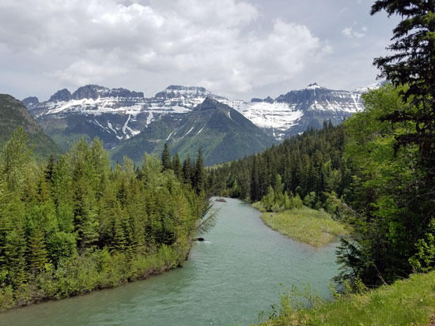 |
|
| Some nice ladies took this shot for me. I didn't know how to
stand to I opted for the, "let me catch some air" pose. :-) |
|
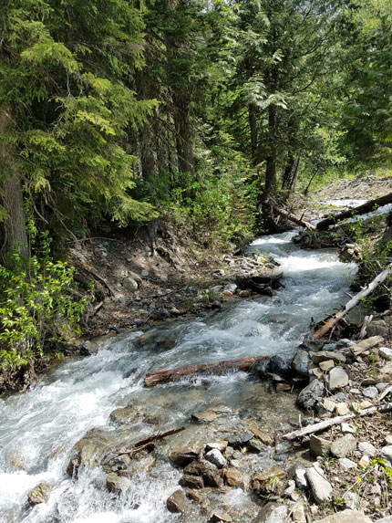 |
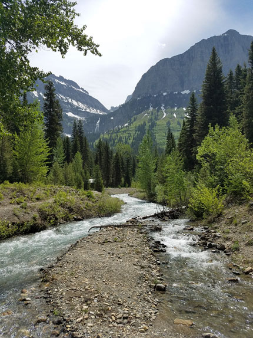 |
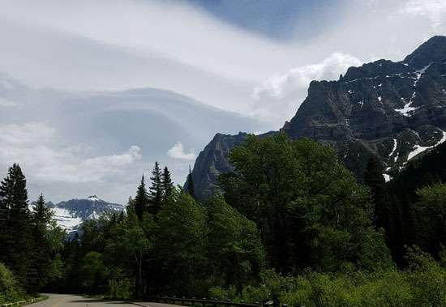 |
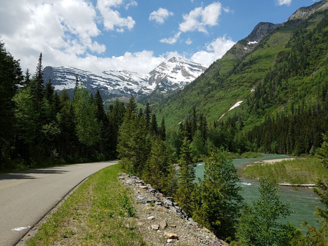 |
| This is all so much more impressive in person. You can't capture
the grandeur, the smell of the air, the sound of the river, and the crisp feel to the day in photos. |
Coasting my way back to the car with lovely views all the way. |